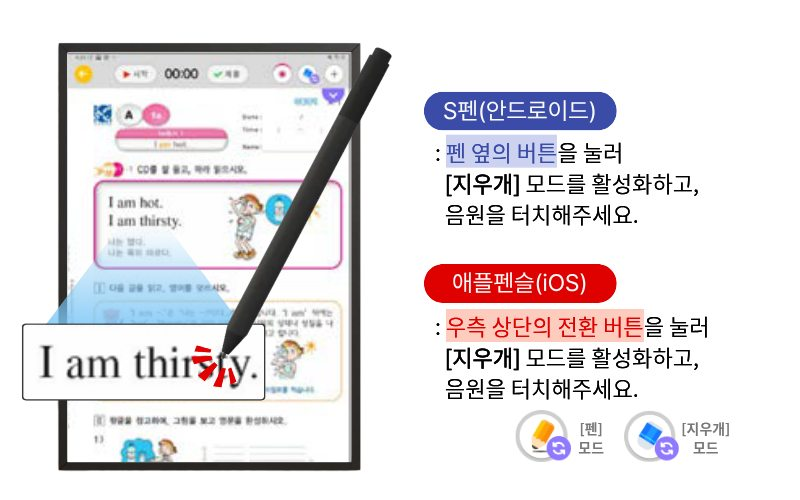
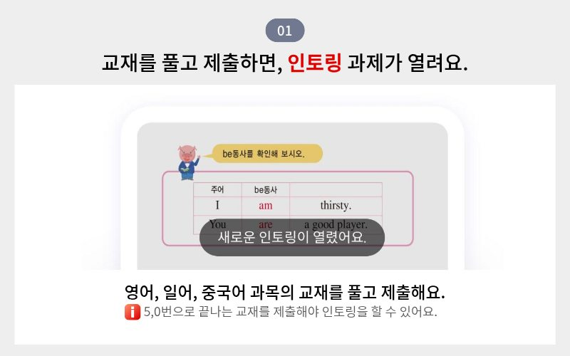
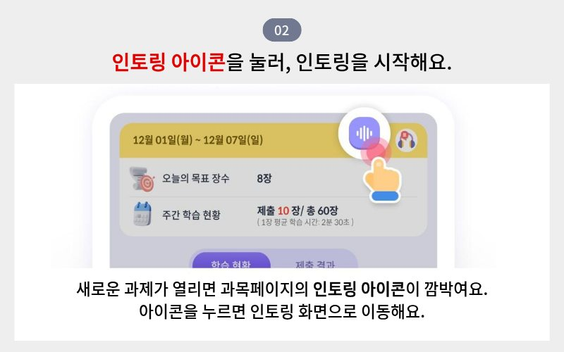
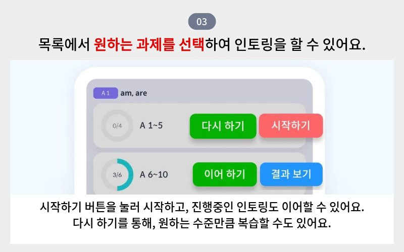
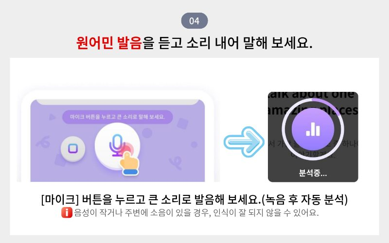
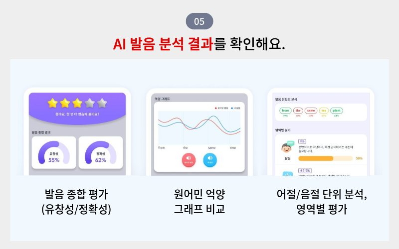

스마트구몬 WINGS 학습 준비
STEP 01
스마트구몬 WINGS
학습 준비
회원가입부터 수업 입장, 혼자서 학습하는 방법까지,
차례대로 안내해 드려요.
스마트구몬 WINGS 학습 준비 4단계,
순서에 따라 차례대로 진행해보세요.

2앱 설치
사용할 기기에 맞는 앱을 선택하고,
앱 이미지를 누르거나 QR 코드를 스캔해 설치해 주세요.
선택하시면 기기에 맞는 앱 이미지와 QR코드가 나옵니다.
스마트구몬N 학습
3회원인증
회원인증부터는 계약 다음날부터 가능합니다.

첫 로그인 시 나타나는 화면에서
안내받은 회원번호를 입력해 인증해 주세요.
회원가입이 안될 경우
고객센터(1588-5566)으로 연락해주세요.
(연결 후 0번 입력 시 상담사와 연결됩니다.)
고객센터(1588-5566)으로 연락해주세요.
(연결 후 0번 입력 시 상담사와 연결됩니다.)
4로그인 안내
로그인은 학습을 시작하는 달의 첫 영업일부터 가능하나,
첫 수업일 전에는 교재가 보이지 않을 수 있어요.당월 학습 시작으로 신청하신 경우에도,
회원인증 및 로그인은 다음날부터 가능해요.
원활한 수업을 위해 지켜야 할 3가지 약속!
① 미리 학습앱 업데이트 확인하기
② Wifi 환경 점검하기
③ 5분 전에 미리 입장하고 준비해두기
1음원 다운로드 받는 방법

2인토링 기능 활용하기 (외국어 한정)





※ 원활한 학습 안내를 위해 제작한 임시 안내 페이지입니다.